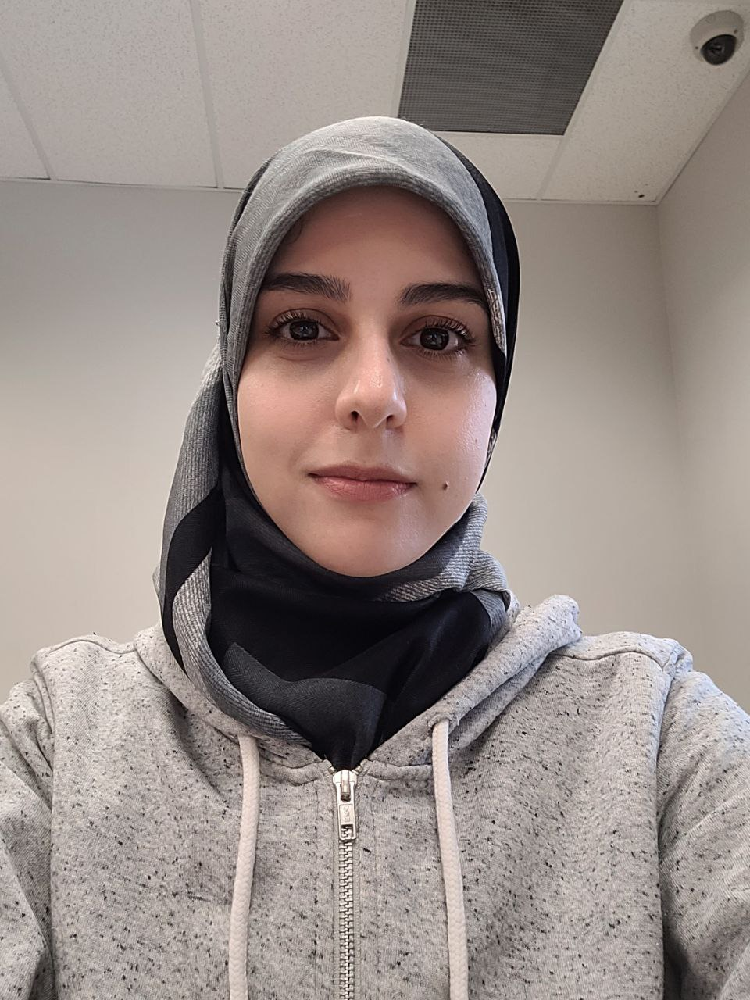

About Me
Hello, my name is Fatemeh Alimoradi, and I came into this world in Ottawa, Ontario, on 14 th December, 1993. I am fortunate to share my journey with a supportive parents and an older brother who has been a constant presence in my life. My childhood was filled with joy, surrounded by wonderful friends who made those formative years truly memorable.
In my pursuit of knowledge and academic excellence, I obtained a bachelor's degree in environmental science engineering. However, fueled by a deep-seated passion and a dream to explore the realms of creativity, I took a bold step towards a career in interior design. I dedicated myself to the pursuit of this new passion, acquiring the necessary skills and knowledge to excel in the field, ultimately earning a certificate in interior design.
For the past five years, I have navigated the dynamic world of design as a freelance designer, honing my craft and gaining valuable experience along the way. Recognizing the ever-evolving nature of the design industry, I decided to take my expertise to the next level. Seeking a broader understanding of interactive media design, I applied for and was accepted into the Interactive Media Design Program at Algonquin College.
Now, I find myself immersed in a new chapter of my educational journey, expanding my horizons and delving into the intricacies of interactive media design. As a dedicated student at Algonquin College, I am eager to absorb all that this program has to offer, with the goal of further enriching my skills and contributing meaningfully to the ever-evolving world of design.
Thank You! -Fatemeh